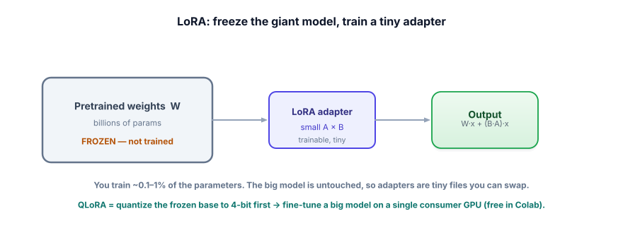

LoRA & QLoRA
Full fine-tuning of a large model needs a small data center. LoRA and QLoRA are the breakthroughs that let you fine-tune on a single free GPU by training a tiny add-on instead of the whole model. This is how fine-tuning is actually done today — and you can run it for free.
Why not just fine-tune the whole model?
Full fine-tuning updates every weight, which means holding the entire model plus optimizer state in memory — tens to hundreds of gigabytes for a real model. That’s expensive and out of reach on a free GPU. The insight behind LoRA (Low-Rank Adaptation): you don’t need to move all those weights to teach a new behavior. Freeze the giant pretrained model and train a tiny set of new “adapter” weights alongside it. You end up training ~0.1–1% of the parameters and getting most of the benefit.

W; train only the small low-rank adapter B·A. The model’s output becomes W·x + (B·A)·x — original behavior plus your learned adjustment.PEFT (parameter-efficient fine-tuning) trains a small number of new parameters instead of all of them. LoRA is the most popular PEFT method: it freezes the base model and inserts small low-rank matrices (the adapter) whose rank r controls capacity. QLoRA goes further: it quantizes the frozen base model to 4-bit (shrinking its memory ~4×) and trains a LoRA adapter on top — so a model that wouldn’t otherwise fit now trains on one consumer/free GPU. The trained adapter is a tiny file (megabytes) you load on top of the base.
A real fine-tune you can run for free (turn on the free GPU: Runtime → Change runtime type → GPU). Uses Hugging Face’s free libraries. Exact argument names shift across versions — treat this as the shape.
!pip install transformers peft trl bitsandbytes datasets
import torch
from transformers import AutoModelForCausalLM, AutoTokenizer, BitsAndBytesConfig
from peft import LoraConfig
from trl import SFTTrainer, SFTConfig
model_id = "Qwen/Qwen2.5-0.5B" # small + free; scale up later
bnb = BitsAndBytesConfig(load_in_4bit=True, # QLoRA: 4-bit frozen base
bnb_4bit_quant_type="nf4", bnb_4bit_compute_dtype=torch.bfloat16)
model = AutoModelForCausalLM.from_pretrained(model_id, quantization_config=bnb, device_map="auto")
tok = AutoTokenizer.from_pretrained(model_id)
lora = LoraConfig(r=16, lora_alpha=32, # the tiny trainable adapter
target_modules="all-linear", lora_dropout=0.05, task_type="CAUSAL_LM")
trainer = SFTTrainer(model=model, train_dataset=train_ds, peft_config=lora,
args=SFTConfig(output_dir="out", num_train_epochs=2,
per_device_train_batch_size=2, learning_rate=2e-4))
trainer.train()
trainer.save_model("my-adapter") # a few MB — the whole "fine-tune"The output isn’t a new multi-gigabyte model — it’s a tiny adapter you load on top of the base at inference. That’s why teams can serve many fine-tunes cheaply: one base model, many small adapters swapped in as needed.
Size a LoRA yourself
Pick a base model and a rank, and watch what you would actually be training. The percentage is the whole reason LoRA exists.
- Full fine-tuning updates every weight — expensive; LoRA freezes the base and trains a tiny adapter.
- You train ~0.1–1% of parameters; the adapter is a small (MB) file you load on top of the base.
- QLoRA = 4-bit quantized base + LoRA → fine-tune a big model on one free/consumer GPU.
- The base model is untouched, so you can serve many adapters from one base and swap them.
- Rank
rsets adapter capacity; start small (8–16), raise if underfitting.
Your company wants 12 specialized variants of one base model (one per department), served cost-effectively. Why is LoRA a great fit?
1. In one sentence each, explain what LoRA and QLoRA each contribute.
2. Your QLoRA run on the free GPU runs out of memory. Name two levers to fit it.
3. Why can a tiny adapter (a fraction of a percent of the weights) meaningfully change behavior?
▸ Show solutions & reasoning
1. LoRA freezes the base and trains a small low-rank adapter, so you update ~1% of parameters instead of all of them. QLoRA additionally loads the frozen base in 4-bit (quantized), cutting its memory ~4× so a big model fits on a single small GPU. LoRA saves training params; QLoRA saves base-model memory.
2. Levers: use a smaller model or ensure 4-bit (QLoRA) is on; reduce batch size (and use gradient accumulation to keep effective batch size); shorten max sequence length; lower the LoRA rank; or enable gradient checkpointing. Each trades a little speed/quality for memory.
3. Because the base model already contains the capability — fine-tuning only needs to steer it toward your task, not build it. Research found that the weight changes needed to adapt a model are “low-rank,” i.e., they live in a small subspace, so a few small matrices can capture them. You’re nudging a capable model, not retraining one, so a tiny adapter is enough.
A few practical levers. Rank r sets the adapter’s capacity: low (4–8) for simple style/format shifts, higher (16–64) for harder tasks; too high wastes parameters and risks overfitting, too low underfits — tune it against validation. lora_alpha scales the adapter’s influence (a common heuristic is alpha ≈ 2×r). Target modules decides which layers get adapters; “all-linear” is a strong default, but adapting only attention projections is lighter. As always, you let evaluation (Lesson 5.6) decide, not folklore.
At serving time you have two options. You can merge the adapter into the base to get a single standalone model (simplest to deploy, but you lose the swap-ability). Or you can keep adapters separate and load them on top of a shared base — which is what makes the “one base, many fine-tunes” pattern so powerful: serving infrastructure can hold one base in memory and dynamically apply different adapters per request, even batching requests for different adapters together. This is how a platform offers dozens of customer-specific fine-tunes affordably.
The takeaway: LoRA didn’t just make fine-tuning cheaper to train — it made fine-tunes cheap to store and serve at scale, which is arguably why fine-tuning became practical for everyone, including you on a free GPU.
LoRA is the how; the most common what is teaching a model to follow instructions in your style. Next: instruction tuning.